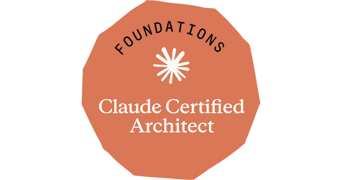

Start here
Foundations — CCAR-F
Build with Claude: agents, tools, MCP, Claude Code, prompting, context.
- 5 domain guides with worked examples and anti-pattern tables
- 6 mock exams × 60 questions (medium and hard)
- Scenario map and study plan
- Cheat sheet — one-page final review